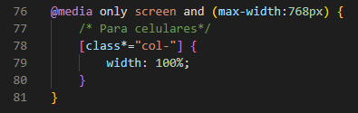
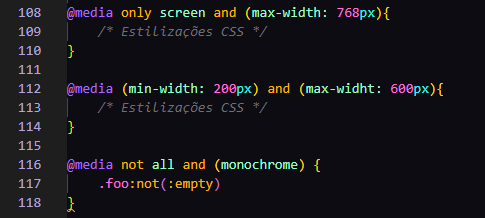
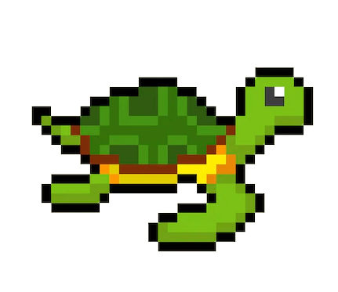

Media query, nada mais é do que uma estrutura do CSS que permite aplicar estilizações especificas para uma página web de acordo com certas condições, fazendo assim com que esta página possa se adequar ao layout de tela em diferentes tamanhos e tipos de mídia.

Operadores Lógicos em Media Query
*only
*and
*not

Ocultar Elementos com Media Query
Exemplo

Alterar Tamanho da Fonte com Media Query
Exemplo
Quando a tela for maior que 600px, a fonte será de 80px. Quando a tela for menor que 600px, a fonte será de 30px.